General Flow Description
The EO4EU platform enables users to access, process, and analyse Earth observation data by integrating various data sources, automating workflows, and providing advanced visualisation tools. It supports data discovery, workflow creation, fusion algorithms, and machine learning applications to extract meaningful insights from geospatial data.
Steps to Use the EO4EU Platform:
Register and Log In
Create an account and log in to access your profile, manage applications, and configure settings (see Account).
Search for Data
Use the Data Search tool to find relevant datasets by selecting a data source, applying filters such as area of interest and date range, and retrieving the necessary data.
Create a Workflow
In the Workflow Creator, define a new workflow by selecting datasets and structuring the workflow. You can also upload in-situ data if needed.
Edit the Workflow
Open the Workflow Editor to design and configure your workflow by dragging and dropping components, setting parameters, and applying processing techniques (see Fusion Functions).
Execute and Monitor the Workflow
Save and publish the workflow to start processing. Track progress through the platform’s status indicators and real-time notification system. Email notifications are also sent in case of workflow completion or failure.
Visualize and Analyse Data
Explore processed results using Data Visualization for graphs, Map Visualization for geospatial overlays, and XR/VR Visualization for 3D analysis.
Manage Files and Track History
Access workflow outputs in the File Explorer, execute advanced commands in the Console, and review past workflows in the History section for tracking and iteration.
Authentication & Account Management
To access the EO4EU platform, the user must register to the platform. Once you access the Web Portal for the first time, you will see the sign-in screen.
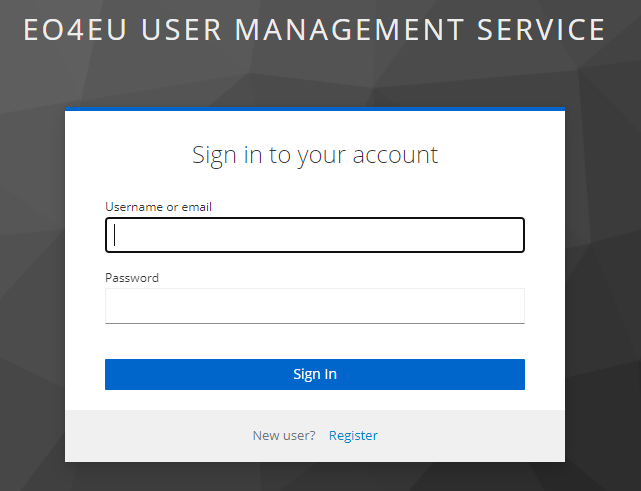As you can see, there is a register button that you can press to register yourself as a new user.
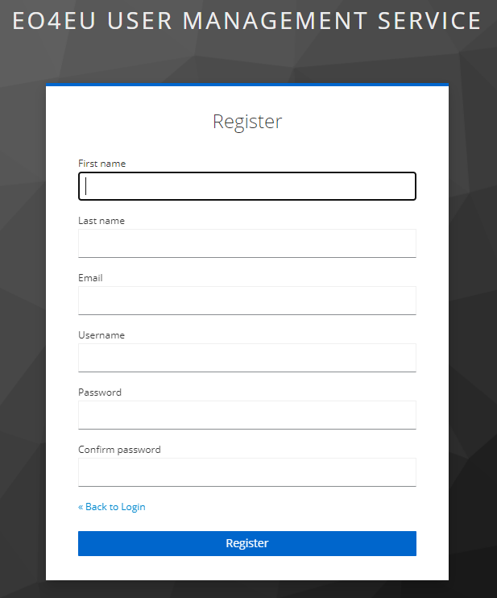Once you have registered and you can access the Web Portal, there is a section “Account” on the left menu

which allows you to see/edit your personal details and see the applications that you have access to.
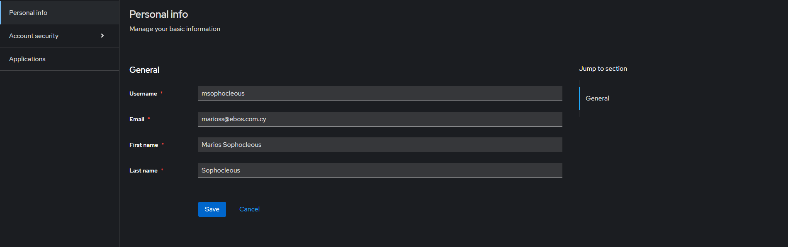Dashboard
The dashboard provides an overview of your data and workflows.
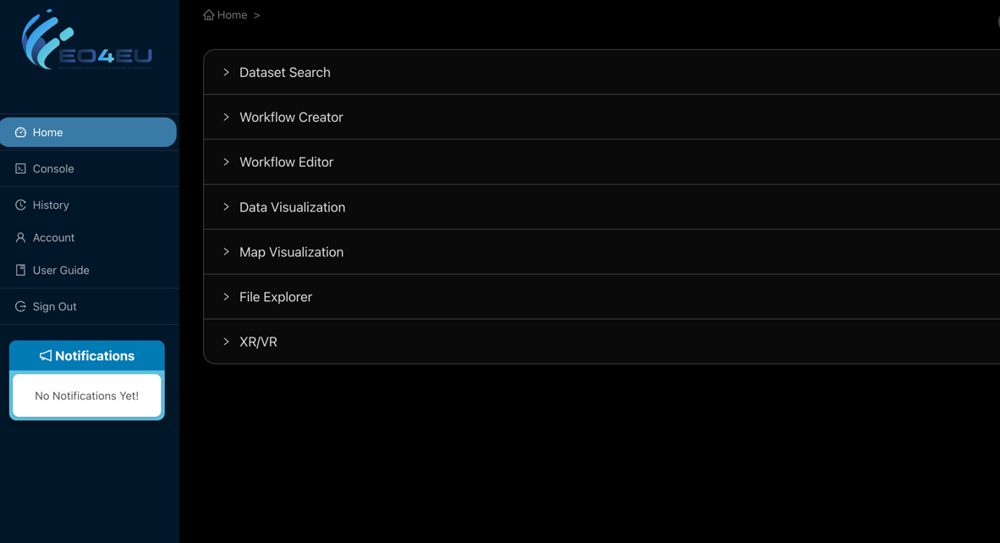Data Search
The first step in using the EO4EU platform is to search for the data needed. One of the platform’s main contributions is that it allows semantic data search through various data sources, including the option to upload datasets. Once the user logs in to the portal, the first accordion section is entitled “Dataset Search”, which is the tool used to search through data sources semantically. From the drop-down menu, the user can choose the data source and provide a keyword.
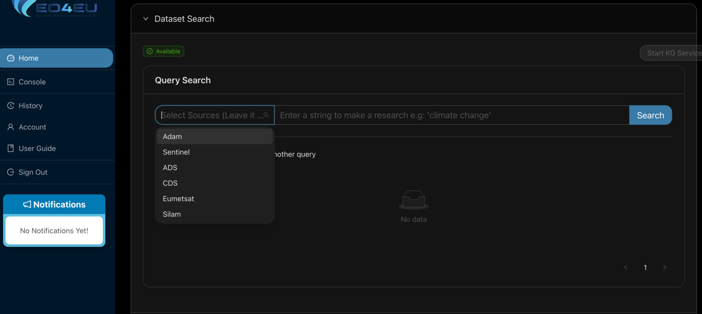Once the data source and keyword are defined, the user can search using the search button on the top right and the most matching results will be shown.

Once the user chooses the dataset of interest, a specialised menu provides more details/options. The example for the ADAM data source includes a description of the dataset, its variables, file formats, and data types.
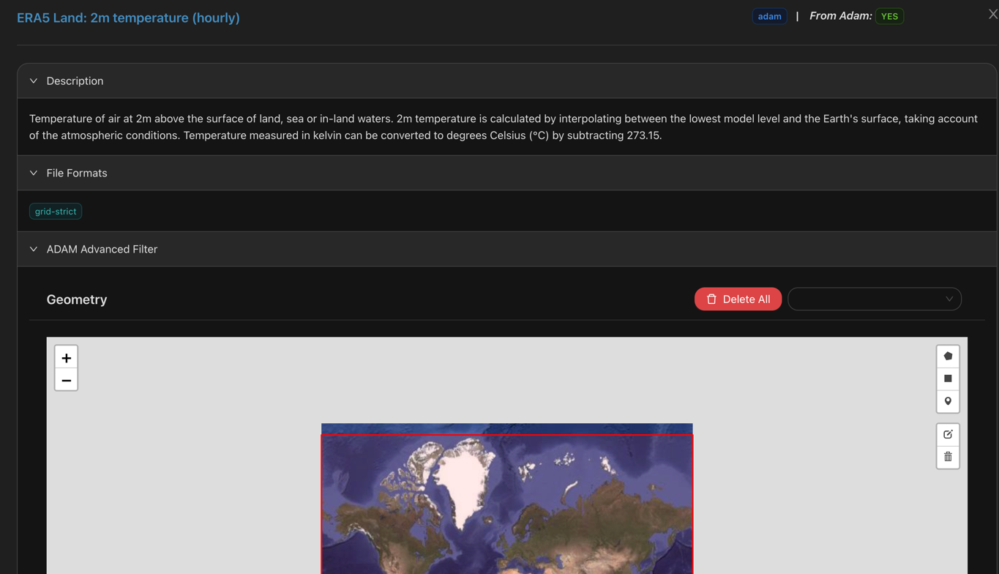Additionally, another section of this menu is the Advanced Filter where the user can choose the area of interest on the map.

Once the area is defined, the user can choose the date ranges.

Once the date range is defined, you can filter them to identify the correct products to download and select the button “Filter now”.
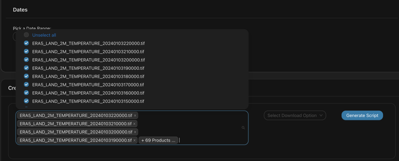Then, the user clicks the Generate Script button to create the Python Script and the MetaInfo JSON that will be passed to the Workflow Editor Component.

The user as a final step shall select the button “Save WF product”. The next step is the Workflow Creator.
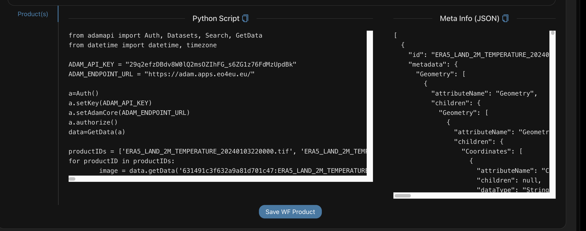Workflow Creator
Workflow creator is the common space where a user can have an overview of all the saved workflow products in their account. In this section, a user shall type a workflow name in the respective field. Afterwards the user shall either select some workflow products to be used in this workflow or select none in order to create an empty workflow. An empty workflow can be used to upload, in the next step, in-situ data. The user, after selecting the preferred workflow products, if needed, and adding a workflow name, can press the “Create Workflow” button to create the workflow in the workflow editor.

For the specific use case, shown in the picture above, we named our use case as “test-case”, we selected 2 workflow products, and we selected the “Create workflow” button. A user can check if the workflow was created correctly by the notification area and the message success in the left part of the platform.

The next step is for the user to create a chain of actions (schema) in the Workflow Editor for the specific data input.
Workflow Editor
Workflow Editor (WFE) is a component of the EO4EU platform, where a user can manage (publish, delete and save as draft) a workflow.
In the application there are two basic views. The view that the user can see and manage all the workflows that have been created, as well as their status, and the editing view.
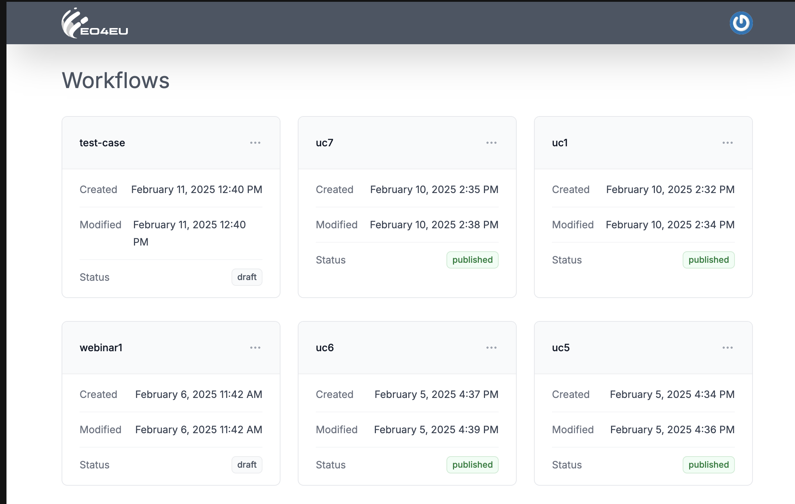The status of each workflow is visible in each workflow item. All possible statuses are:
compiling
compiled
publishing
published
stopping
stopped
completed
error
draft
With the 3-dot menu, in the top right corner of any item, a user can see publish, view or delete an item depending on its state.

If a user selects “View”, the workflow editor builder opens. The editor is divided into three main sections. The top bar where the user can save his work or publish it, the editing canvas, and the marketplace of the components available on the left for insertion into the workflow. It should be noted that items in the marketplace are searchable. A user can return in the previous page by clicking the left arrow close to the workflow name.
The workflow building process is handled by dragging-and-dropping items from the marketplace to the canvas and connecting them.


Editable items have a 3-dot menu. Clicking on it opens a new window in which the user can edit the parameters of each component. Items can be deleted if the pointer hovers at the right up corner (red trashcan symbol).
Detailed information for the use cases can be shown if you press the three dots of the components in the marketplace.
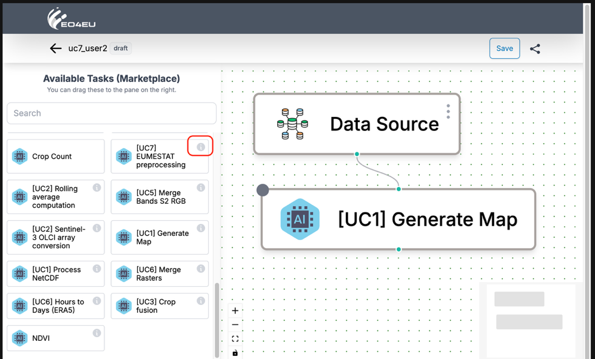In the data source, users can upload new files and manage their files and directories.

All the in-situ data shall be registered with the same notation as that of all data sources integrated in the KG. The in-situ data can then be permantly stored in the KG as an added datasource. The new data can be characterized as a new Data Source.
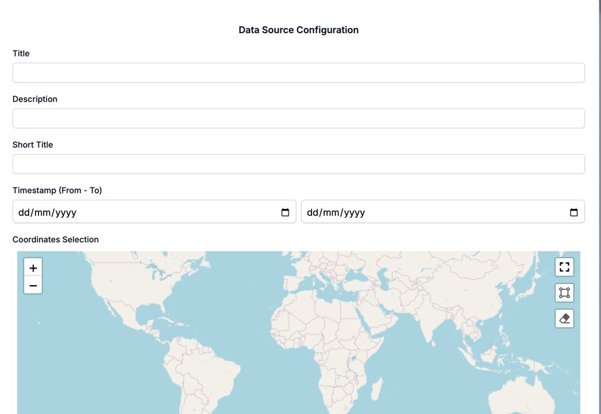
When the chain of the actions is completed, the user can either save the workflow or publish the workflow. Publishing means that the workflow is started immediately.
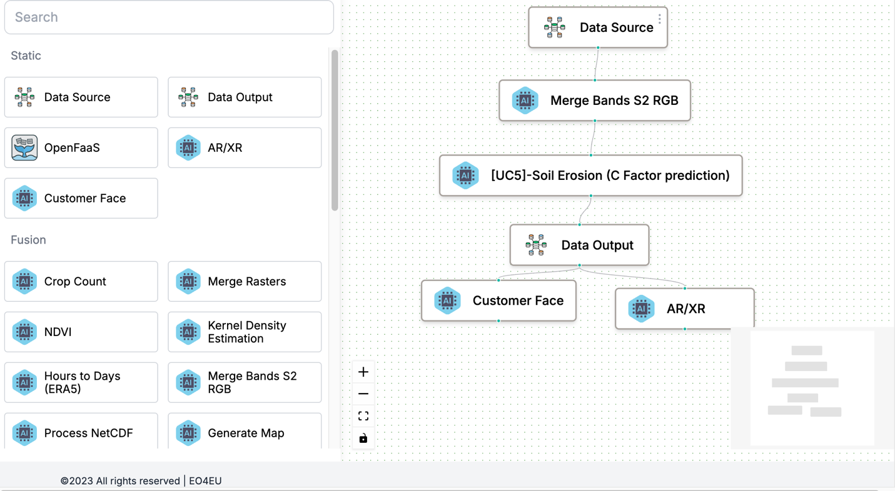Once the workflow has started, the progress of the workflow can be found in the notifications section of the EO4EU portal. Furthermore, email notifications are sent to the user in case of workflow completion or error. As a result, the user can step off the WFE and come back should he receive an email from the platform.
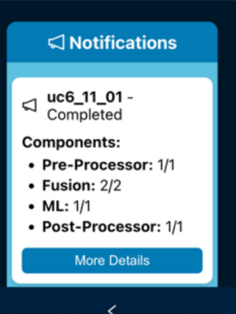The results of the Workflow
Once the workflow processing has been completed, the output files can be visualised in three ways. If the results are GeoTIFFs, they can be visualised on maps by overlaying layers in 2D through the “Map Visualisation” component. The results can be visualised on graphs or tables through the “Data Visualisation” component if the results are arithmetic data. Finally, the platform provides the option to visualise the data in a 3D mode through the “XR/VR” component. More details on these three components can be found in the following subsections. The files can also be accessed in the “File Explorer” section.
Data Visualization
The Data Visualization tool provides various charts and graphs to help users understand and analyse their data. Users can customise their visualisations and save them for future reference. The users can choose their workflow of interest from the dropdown list and generate charts using the Add Chart button.
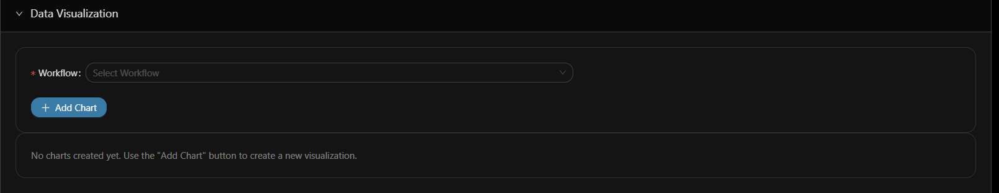When the users press on the Add Chart button, the menu shown below appears to choose the file to visualise.
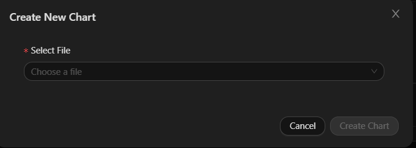Once the file is chosen, another menu appears to configure what the chart will present.

When all the configurations are provided, the user will press on Create Chart and the chart will be created. The user can create as many charts as needed with either one or two charts per row.

Map Visualization
The Map Visualization tool allows users to visualise geospatial data on a map. Users can overlay different datasets and use various spatial data analysis tools. The user can choose the Workflow with available data from the Workflow dropdown menu and select the file (or multiple files) they want to visualise. The tool can visualise TIFF, NetCDF and shapefiles.

XR/VR
This tool allows the user to explore the output data and the intermediate results of a specific workflow in an Extended Reality (XR) environment, namely Virtual Reality (VR) environment and Augmented Reality (AR) environment. Currently, on the dashboard it is only possible to visualize the data in a Virtual Reality environment. To enable the XR visualization on a specific workflow, during its creation within the Workflow Editor application, the AR/XR task needs to be linked to the data output task as shown in the following image:

When a specific workflow is selected using the select workflow section in the dashboard, if the XR visualization was enabled during the creation phase of the workflow, the VR visualization of its resulting data is available by opening the XR/VR tab in the dashboard’s Home section. In the VR interface home page, all the areas covered by the data resulting from the selected workflow are displayed as selectable bounding boxes on a globe. If a device supporting VR sessions is detected, a button appears on the top-right corner of the application and can be used to start a VR session.

By selecting a specific bounding box, it is possible to visualize the data related to the selected area jointly with a basic set of metadata. During a VR session, a wrist mounted User Interface is available to navigate between the different data layers and display the metadata information.
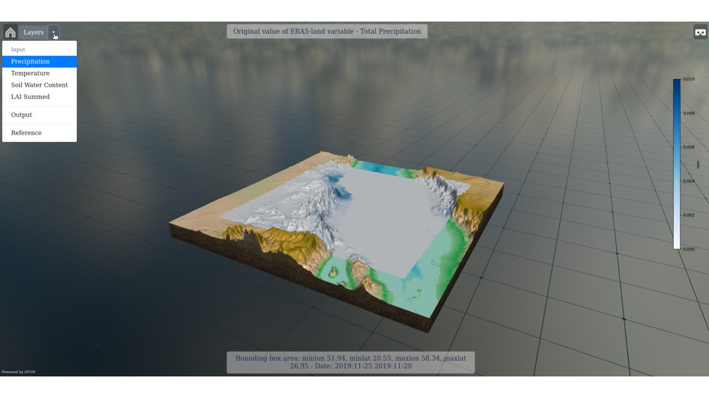File Explorer
The File Explorer allows the user to browse through uploaded and generated files. The File Explorer contains a hierarchical directory structure that the user can navigate. In order to visualize the files of a particular workflow, a user shall select the name of the relevant workflow.
Console and History
At the left part of the GUI you can also overview the Console and History tabs.
Console
The Console provides a command-line interface for advanced users to interact with the EO4EU platform. Users can execute scripts and commands directly from the console.

History
The User History section keeps track of all user activities and workflows. Users can view their history to review past actions and results.

Use-Case Tutorials
We are providing the steps to run all the use cases in the EO4EU platform. All the insitu files can be found in the following link.
UC1
This use case will run with in-situ data. The original data are created through an API of Pasyfo.
Create an empty workflow (named UC1 in the example below)
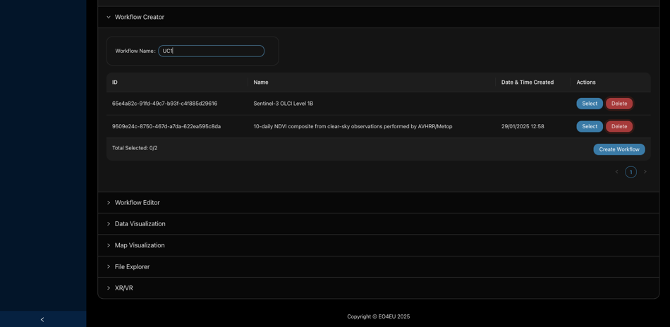Open Workflow editor and find the draft workflow with the name of UC1
We add the following components and connect them as shown below

We select data source in order to upload the uc1.zip as in-situ data
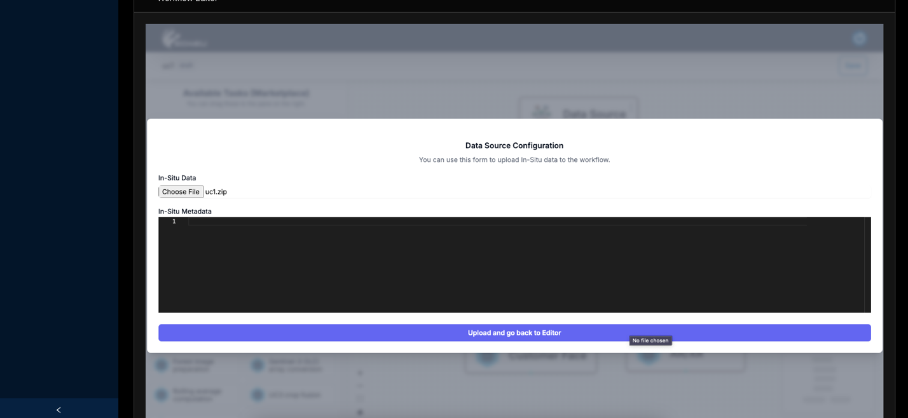Save the workflow
Publish the workflow
When the workflow ends, a NetCDF is published

UC2-a
This use case will run with in-situ data.
Create an empty workflow

Open Workflow editor and find the draft workflow with the name of uc2-a
We add the following components and connect as shown below
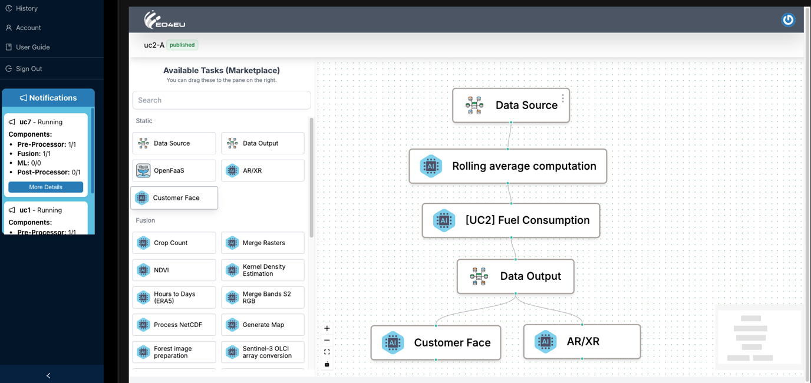We select data source in order to upload the uc2(1.csv).zip as in-situ data
Save the workflow
Publish the workflow
When the workflow ends, Numpy Array and CSV data are published for computing the Fuel Consumption
UC2-b
Data search Sentinel-3 OLCI Level 1B- (04/01/2024 - 10/01/2024) close to the area of Suez
Select Source: Sentinel - Data search: Sentinel-3 OLCI Level 1B)
Choose the following data source: Sentinel-3 OLCI Level 1B

Define area of interest

Define Date range (4/01/24-10/01/24)
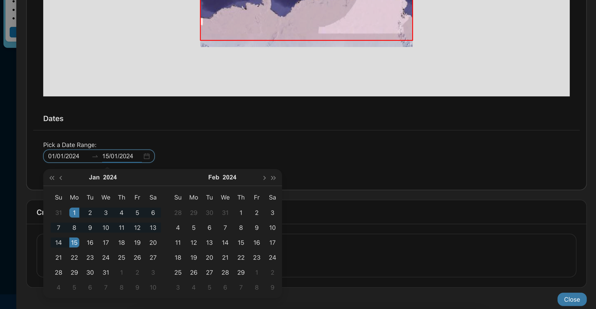Generate Script and Save WF product
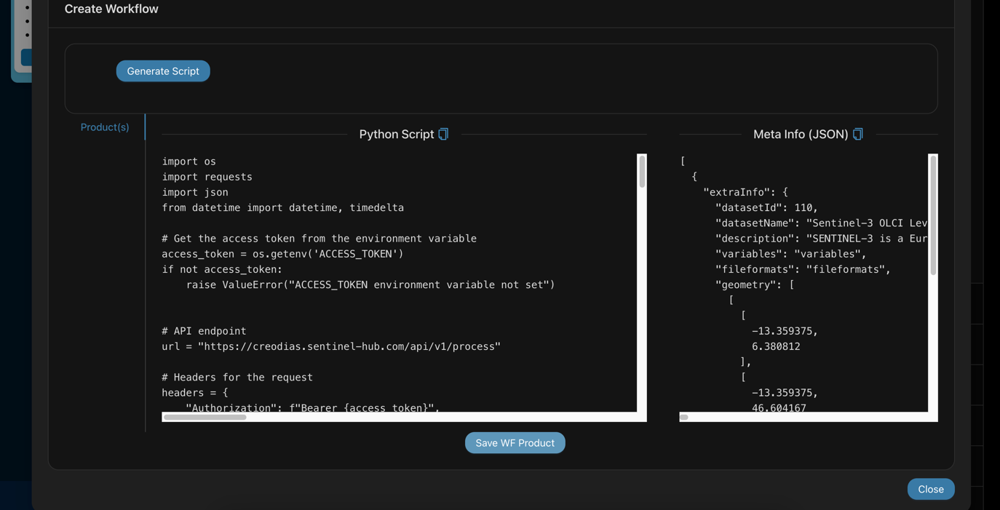Workflow Creator: Create a workflow named uc2-b with the product Sentinel-3 OLCI Level 1B selected

Open Workflow editor and find the draft workflow with the name of uc2-b. In the menu on the top right corner click view.
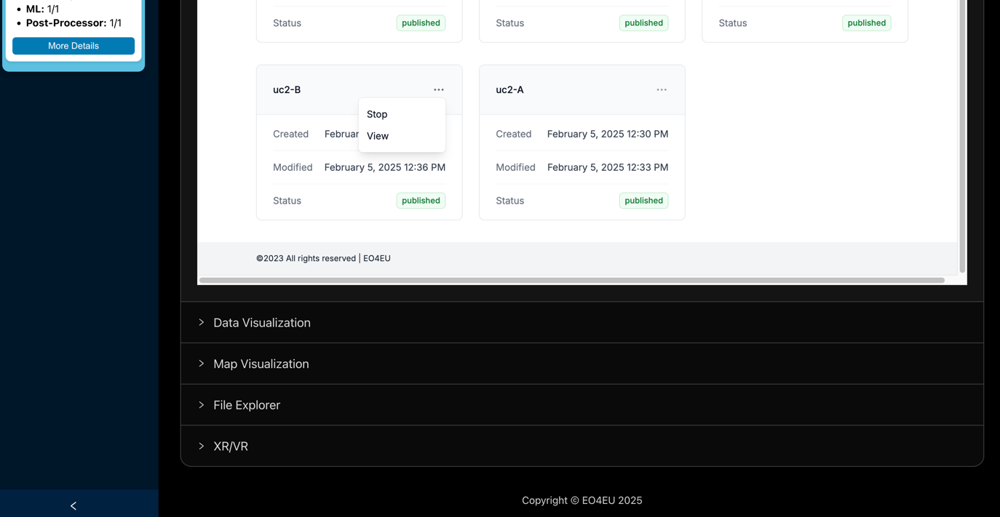Add the following components and connect as described below

Save the workflow
Publish the workflow
When the workflow ends, a Numpy Array and a CSV are published to identify the wind prediction
UC3
This use case will run with in-situ data.
Create an empty workflow named uc3

Open Workflow editor and find the draft workflow with the name uc3. Click view.
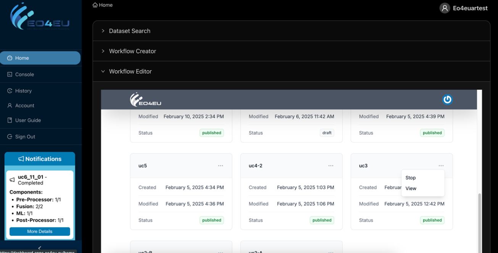We add the following components and connect them as shown below
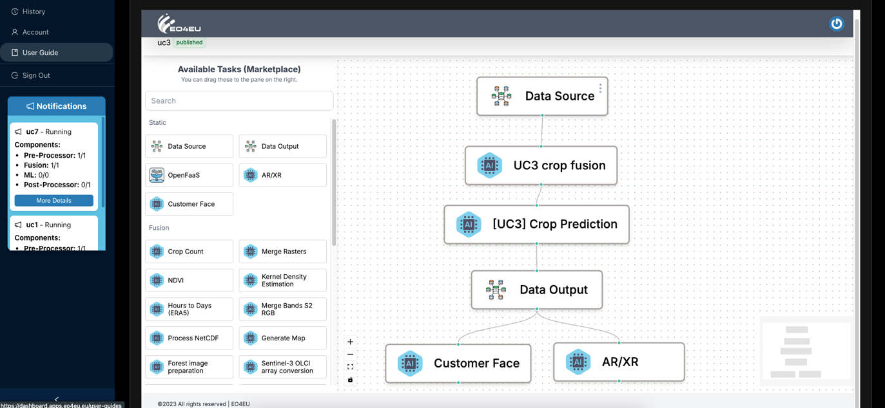We select data source in order to upload the UC3_INSITU.zip as in-situ data

Save the workflow
Publish the workflow
When the workflow ends, a numpy array and a csv are published
UC4
Hint: UC4 is for forest recognition, so we need at least an area of land.
Data search - Sentinel-1 GRD - (02/01/2018 - 31/12/2018) an area inside Austria
Select Source: Adam or Sentinel - Data search: Sentinel-1 GRD
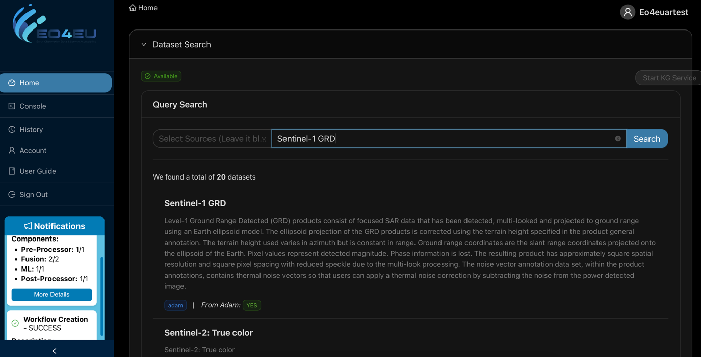Choose the following data source: Sentinel-1 GRD
Define area of interest
Define Date range (02/01/24-10/01/24)
Generate Script and Save WF product
Workflow Creator: Create a workflow named uc4 with the product Sentinel-1 GRD selected
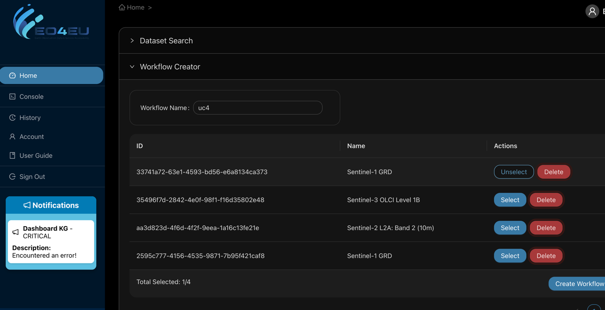Open Workflow editor and find the draft workflow with the name of uc4. Click view.
Add the following components and connect them as shown below
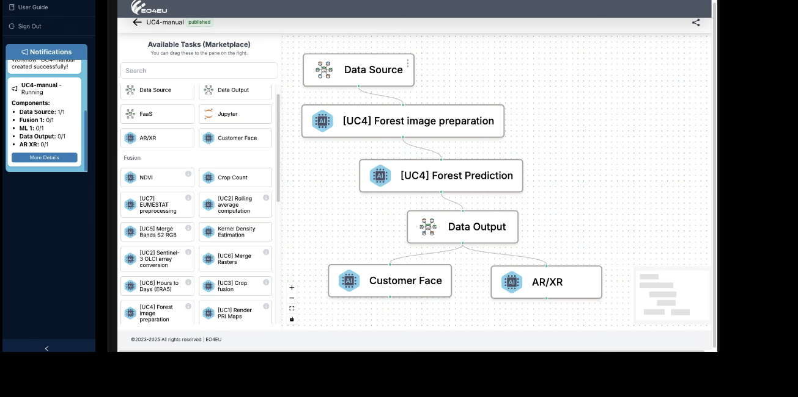Save the workflow
Publish the workflow
When the workflow ends, TIFFs of the prediction of a specific area identified as forest are published
Map visualization


UC5
Data search: Sentinel-2 L2A Bands 2, 3, 4, 8, 11, 12.
For each dataset:
Define area of interest
Define date range
Push Filter now and select all products


In the workflow creator, we select the three products, name the workflow UC5-test, and select Create Workflow

In the Workflow editor, use the workflow schema as shown in the picture below. Click the three dots on the FaaS node and provide a python script (crop images) and the needed requirements. Finally, save and publish the workflow.


When the workflow completes, TIFFs are published (use File Explorer tab to view all data related to the workflow). Now, the map visualization, data visualization and AR/XR tabs can be used.


UC6
Data search: ERA5 insitu data

Generate Script and Save WF product
In the workflow creator, select the dataset, name the workflow uc6, and select Create Workflow

In the Workflow editor, use the schema as shown in the picture below, save and publish the workflow

Once the workflow completes, the map visualization and AR/XR tabs can be used to visualize the use case results


{kind=link}
{kind=link}
{kind=link}
{kind=link}
{kind=link}
{kind=link}
{kind=link}
{kind=link}
{kind=link}
{kind=link}
{kind=link}
{kind=link}
{kind=link}
{kind=link}
{kind=link}
{kind=link}
{kind=link}
{kind=link}
{kind=link}
{kind=link}
{kind=link}
{kind=link}
{kind=link}
{kind=link}
{kind=link}
{kind=link}
{kind=link}
{kind=link}
{kind=link}
{kind=link}
{kind=link}
{kind=link}
{kind=link}
{kind=link}
{kind=link}
{kind=link}
UC7
This use case will run with in-situ data.
Create an empty workflow as in UC1 or UC2
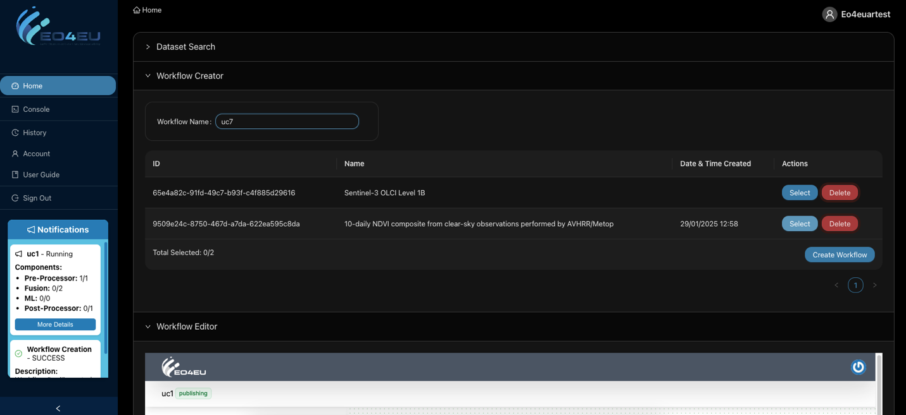Open Workflow editor and find the draft workflow with the name of uc7
Add the following components and connect them as shown below

Select data source in order to upload the uc7.zip as in-situ data
Save and publish the workflow
When the workflow ends, a TIFF is published going to jixel app

{kind=link}